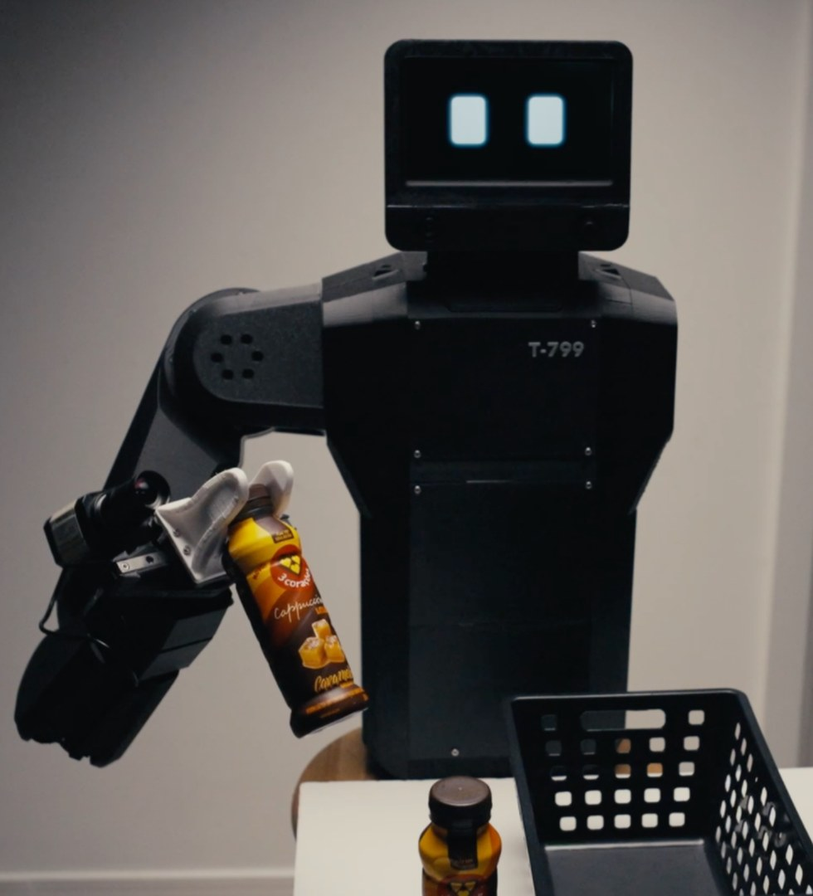
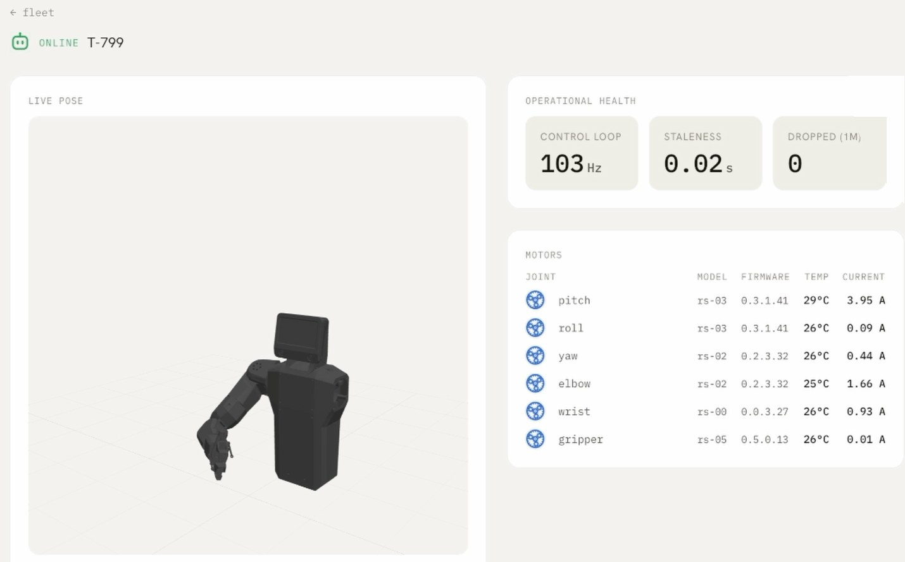
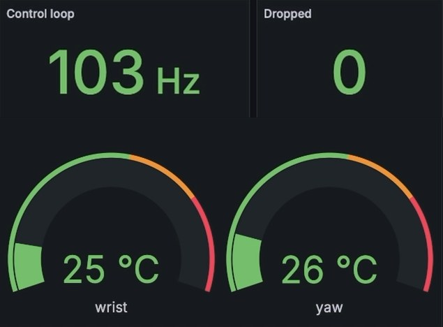

Robótica, entregue como serviço.
Robôs que fazem o trabalho físico repetitivo dentro da operação do cliente, pagos por mês.
Pré-seed · Novembro de 2026
Entre a linha de produção e o depósito, tudo ainda passa por mãos.
Mover, organizar e manipular material ainda é trabalho manual.
1,6x
o salário bruto é o que cada pessoa custa de verdade, só com os encargos da CLT.
30%
ou mais do time operacional sai todo ano. Repor cada um custa de metade a dois salários anuais.
É o trabalho que ninguém quer continuar fazendo, e a única forma de produzir o dobro é contratar o dobro de gente.
Encargos: InvestNews. Rotatividade: CAGED / Loris Consultoria, 2024. Custo de reposição: Robert Half / SHRM.
A robótica vai passar pela mesma mudança que o software e a infraestrutura.
Anos 2000
Software
Licença perpétua e servidor na empresa viraram assinatura mensal.
Anos 2010
Infraestrutura
Data center próprio virou AWS, GCP e Azure, cobrados pelo uso.
Agora
Robótica
Robô comprado e meses de integração viram uma mensalidade pelo trabalho entregue.
Nossa tese: trabalho físico automatizado vai ser contratado como serviço, em massa. Empresas não querem máquina, querem o trabalho feito.
Trabalho físico por assinatura.
Robôs para tarefas repetitivas em ambiente interno: sobre uma base móvel quando a tarefa envolve deslocamento, ou fixos em uma bancada quando o material vem até o robô. Começamos por indústria leve e centros de distribuição. O cliente paga uma mensalidade pelo trabalho entregue.
Instalação
Hardware montado no Brasil com componentes importados. Entra na operação sem projeto de integração.
Treinamento
Aprende uma tarefa nova em poucas horas, por demonstração. Alguém da operação mostra, e o robô passa a fazer.
Operação
Operação e manutenção da frota à distância, incluídas na mensalidade.

O robô aprende a tarefa em horas, por demonstração.
Demonstração
Executamos a tarefa por teleoperação algumas vezes. O robô grava o que vê e o que faz.
Treino por imitação
O modelo aprende o movimento a partir das gravações. Em operação, recebe a instrução, olha a cena e executa.
Frota
Os robôs compartilham o mesmo modelo. Dados de operação de cada unidade voltam para o treino, e a frota inteira melhora a cada versão.
Na robótica tradicional cada tarefa é programada à mão, e por isso toda instalação vira um projeto de meses. Aqui o mesmo robô troca de tarefa com uma instrução nova, sem reprogramar. É isso que torna a mensalidade possível, e é por isso que a plataforma melhora conforme a frota cresce.
O mesmo trabalho de três turnos, dentro de uma mensalidade.
Funcionário CLT
R$ 3.200
220 horas por mês, R$ 14,50 a hora. Falta, afastamento, férias e rotatividade por conta do cliente.
Robô Mechron
R$ 5.000
650 horas por mês, R$ 7,70 a hora. Três turnos, sem hora extra. Manutenção dentro do preço.
Para cobrir as mesmas 650 horas com pessoas, hoje são três funcionários, R$ 9.600 por mês. Com o fim da escala 6x1, a partir de dezembro de 2027 passam a ser quatro, R$ 12.800 por mês.
Contrato mínimo de 24 meses. O primeiro ano paga o hardware e do segundo em diante a margem é recorrente.
Auxiliar de logística, R$ 1.975 bruto (salario.com.br, 2026) com encargos de 1,6x (InvestNews). 220 horas é o divisor da CLT para 44 h semanais. EC 141/2026: 42 h em dez/2026, 40 h em dez/2027. Robô: 90% de 720 horas.
Tamanho do mercado
TAM
US$ 30 tri
Mercado de trabalho global que robôs podem endereçar, segundo o Morgan Stanley.
SAM
R$ 130 bi
Por ano. O custo CLT de 2,47 milhões de postos de produção e logística interna no Brasil.
SOM
R$ 1,3 bi
Por ano com 1% disso, perto de 22 mil robôs. Mil robôs em 2030 é 0,05%.
Robôs por 10 mil trabalhadores na indústria
EUA
307
China
166
Mundo
132
México
62
Brasil
21
RAIS 2024 (CBO 7842, 4141, 7822, 7841) com custo CLT de 2x · IFR World Robotics 2025 · Morgan Stanley
Por que agora.
−40%
no custo de material de um robô humanoide, em um ano
Braço, base e sensor viraram componente de prateleira. Dá pra importar, montar aqui e fechar a conta da mensalidade.
horas
para o robô aprender uma tarefa nova, em vez de meses
Até pouco tempo atrás cada tarefa era programada à mão. Hoje o modelo aprende por demonstração.
21
robôs por 10 mil trabalhadores no Brasil; 132 no mundo
Nenhum RaaS local. Os globais cobram em dólar, com preço feito para o salário americano.
+10%
no custo da hora humana até dezembro de 2027, por lei
O fim da escala 6x1 leva a jornada de 44 para 40 horas sem reduzir salário. Tem data marcada.
Goldman Sachs, Humanoid Robot: The AI Accelerant, 2024 · IFR World Robotics 2025 · EC 141/2026
Ninguém vende trabalho físico por assinatura no Brasil.
| Venda de robô | Assinatura | |
|---|---|---|
| Global | Boston Dynamics, FANUC, KUKA, Unitree. Venda direta, investimento alto, foco em indústria grande. | Dyna cobra mensalidade por robô e lançou em setembro de 2026 um semi-humanoide sobre rodas, com dois braços, para lavanderia, hotel e armazém. Verne faz RaaS mensal para kitting e montagem em fábricas médias dos EUA. Brightpick faz RaaS para fulfillment, mínimo de 10 robôs a US$ 1.990 por mês cada. |
| Brasil e LATAM | Integradoras e distribuidoras revendem hardware importado, sem recorrência e sem operar nada. | Nenhum player local. Os globais cobram em dólar, com preço feito para o salário americano. |
A Mechron é o primeiro RaaS desenhado para o custo de mão de obra brasileiro: preço em real, hardware montado aqui e operação dentro da fábrica do cliente.



Protótipo executando "pega a garrafa e leva até o cesto" sem teleoperação. Abaixo, a plataforma de controle e a telemetria do robô ao vivo.
O que já temos.
O protótipo aprende a tarefa por demonstração, executa a partir de uma instrução e troca de tarefa sem reprogramar. Por trás dele já rodam a plataforma, a telemetria do robô e a API que recebe as gravações de campo para retreinar o modelo.
Duas fábricas de grandes marcas de alimentos e bebidas confirmaram interesse em rodar o piloto assim que as primeiras unidades ficarem prontas.
Em andamento: o modelo em treinamento e validação, e o fechamento do hardware para fabricar as primeiras unidades.
Vídeo de demonstração: youtube.com/watch?v=z2cnDMFLU00
Plano e marcos.
Fase 1 · agora
Robô em operação
Pré-seed de US$ 1M, pilotos rodando em até 8 meses
Robô v1 completo operando em piloto, em fábrica real, com o pipeline de dados, treino e operação rodando.
Fase 2
Receita recorrente
Seed de US$ 3 a 5M
Pilotos viram contratos. Clientes pagando com payback abaixo de 12 meses, a partir de meados de 2027.
Fase 3
Frota em escala
Série A
Fabricação em lote e centenas de robôs trabalhando no Brasil e na América Latina.
Clientes pagantes até meados de 2027.
Pré-seed de US$ 1M, via SAFE.
Para onde vai o dinheiro
Fecha o hardware, fabrica as primeiras unidades e coloca uma frota trabalhando nos dois pilotos em 8 meses.
Abre a Fase 2, com a frota em fabricação e as primeiras contratações de engenharia e operação.
Mantém a operação até o seed.
Receita anual por tamanho de frota, a R$ 60 mil por robô
100 robôs
R$ 6M
1.000 robôs
R$ 60M
10.000 robôs
R$ 600M
Até 2030 o trabalho físico repetitivo da fábrica vai ser feito por robôs contratados como serviço, pagos pelo trabalho entregue. Queremos liderar isso na América Latina.
Quem está construindo a Mechron.
Daniel Romero
Cofundador, CEO
25 anos em tecnologia, AI Engineer com passagens por OpenAI, Qdrant e Elastic. Responde pela arquitetura do robô: mecânica, navegação, visão e controle.

Alberto Souza
Cofundador, COO
Senior Staff Engineer no Nubank. Foi Diretor de Tecnologia e Educação na Zup e sócio-fundador da Alura. Monta time e faz entregar.
Eduardo Scheinkman
Cofundador, CPO e CFO
Fundou startup e liderou tecnologia em empresas investidas por private equity. Transformação digital e com IA. Cuida do processo e da operação em escala.
Construir o robô é metade do trabalho. A outra metade é instalar, operar e manter a frota dentro do cliente, e o time cobre as duas.